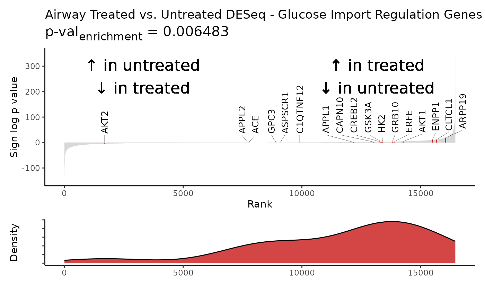

If ggtext package is installed, will do fancy version of p_enrichment. :)
Usage
plot_waterfall(
sig,
highlight,
rankcol,
rankcol_name = rankcol,
hightolow = FALSE,
vertical = FALSE,
label = TRUE,
replab_size = 3.5,
density = FALSE,
hllab = "Highlight",
otherlab = "Other",
pval = TRUE,
colors = c("firebrick3", "gray"),
lab_high = NULL,
lab_low = NULL,
lab_size = 6,
legendpos = "none",
title = NULL,
savename = NULL,
width = 10,
height = 5
)Arguments
- sig
dataframe; names/genes in 1st column +
rankcolcolumns- highlight
vector; list of names to highlight in waterfall
- rankcol
string; colname of values to rank by
- rankcol_name
string; descriptive name of values to rank by
- hightolow
logical; T for x-axis by decreasing value
- vertical
logical; T for columns to be horizontal
- label
logical; T to label highlighted values
- replab_size
numeric; size of gene label
- density
logical; T for density plot as side panel
- hllab
string; description of highlighted values
- otherlab
string; description of non-highlighted values
- pval
logical; T to include KS enrichment pvalue
- colors
vector; two colors, for highlight vs. other
- lab_high
string; descriptor for high rankcol values
- lab_low
string; descriptor for low rankcol values
- lab_size
numeric; size of value annotation label
- legendpos
vector; value btwn 0-1 as legend coordinates (ggplot
legend.position)- title
string; plot title
- savename
string; filepath to save figure under
- width
numeric; width of plot
- height
numeric; height of plot
Examples
library(dplyr)
airway_deseq = Rubrary::airway_deseq_res %>% relocate(hgnc_symbol)
genes = Rubrary::GSEA_pathways$GOBP_REGULATION_OF_GLUCOSE_IMPORT[1:20]
Rubrary::plot_waterfall(
sig = airway_deseq,
highlight = genes,
rankcol = "sign_log_p",
rankcol_name = "Sign log p value",
lab_high = "\U2191 in treated\n\U2193 in untreated",
lab_low = "\U2191 in untreated\n\U2193 in treated",
title = "Airway Treated vs. Untreated DESeq - Glucose Import Regulation Genes",
density = TRUE
)
